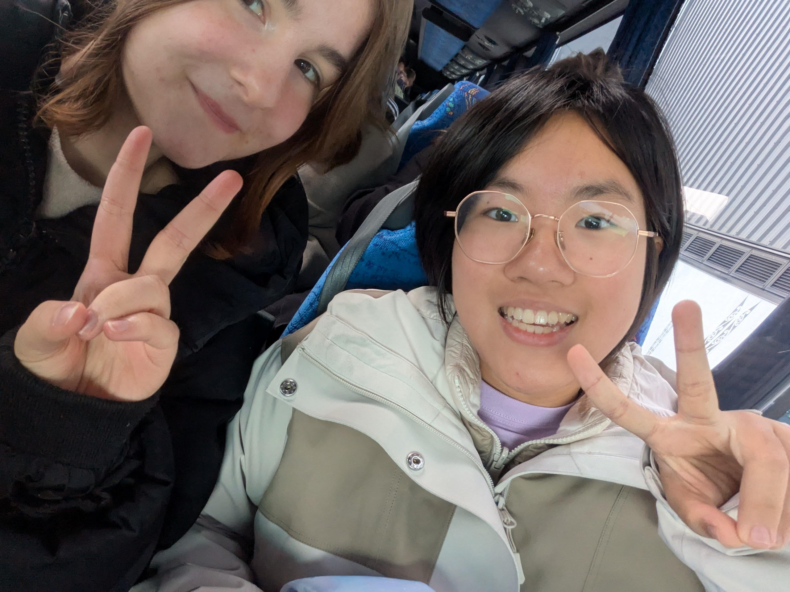
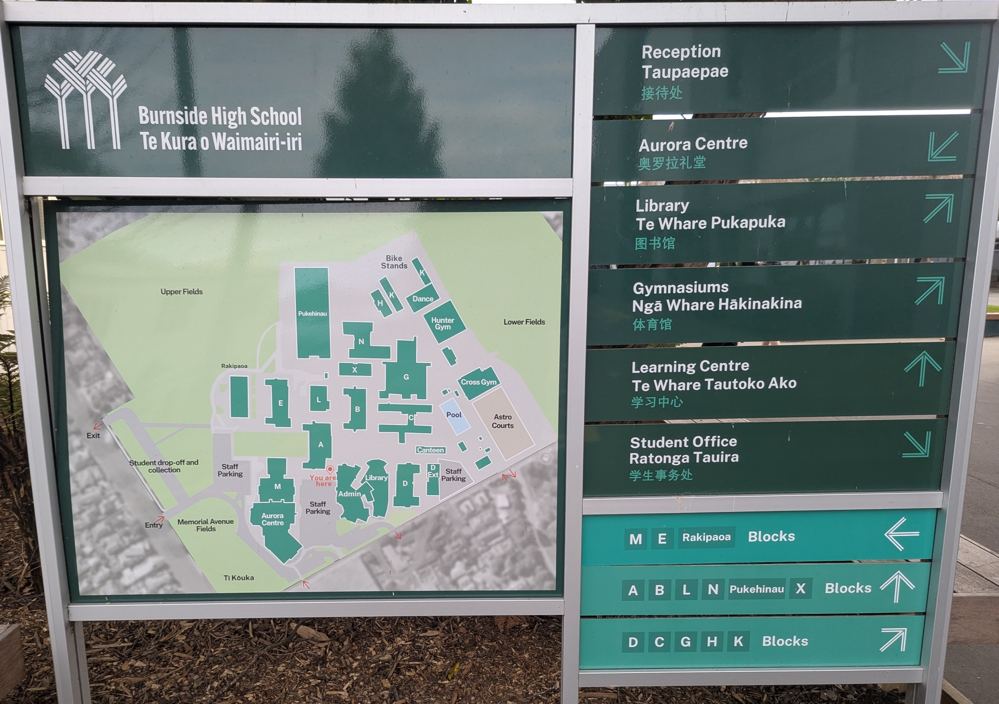
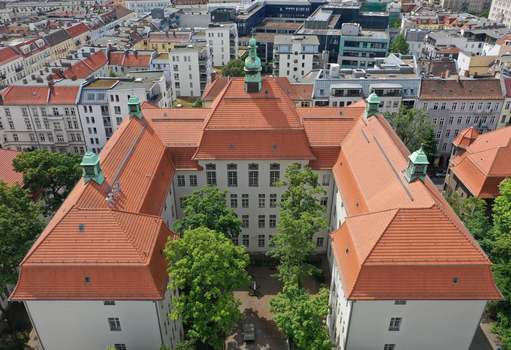

The first days at Burnside High School were a bit overwhelming, but also really exciting. The first three days were just with the other international students. That was a nice start. I was then introduced to the school environment, met my teachers and classmates, and got a feel for the daily routines. The school staff were very welcoming and supportive, which helped me adjust quickly. I was also given a tour of the campus, which helped me navigate the different classrooms and facilities. I got to know so much different people from all over the world, which was so cool and new to me. I think my first days were one of the best here for me so far because I loved all the new situations I learned and experienced. On top I made friends really quickly and I think that was really motivating for me in the beginning and a awsome start for my new life.

I really like Burnside High School for being a big school with a lot of different subjects and opportunities. I think the school is very well organized and the teachers are really nice and helpful. The school has a great atmosphere and I feel very comfortable here. I also love that there are so many extracurricular activities and clubs that I can join. One thing I really like are the diffrent math cources sorted by level. I think that is a really good idea because it makes it easier for the students to learn and understand the content. But I personally think that it is a bid sad that there is just the subject science and not the split into physics, chemistry and biology. I like that you can choose three of your subjects and that there are incredible many subjects to choose from. But sometimes I wonder if subjects like geografy or history wouldn't also be important.

I think the biggest difference between Burnside High School and my school in Germany is the size of the school. Burnside High School is a really big school with a lot of students and teachers. My school in Germany is much smaller and has a more intimate atmosphere. I also think that the teaching style is different. In Germany, the teaching style is more traditional and teacher-centered, while in New Zealand, it is more student-centered and interactive. The subjects are also very different. In Germany, I had 16 subjects and could only choose one of them (the 16th was Latin and optional). In New Zealand, I can choose three subjects and there are many more options to choose from.
